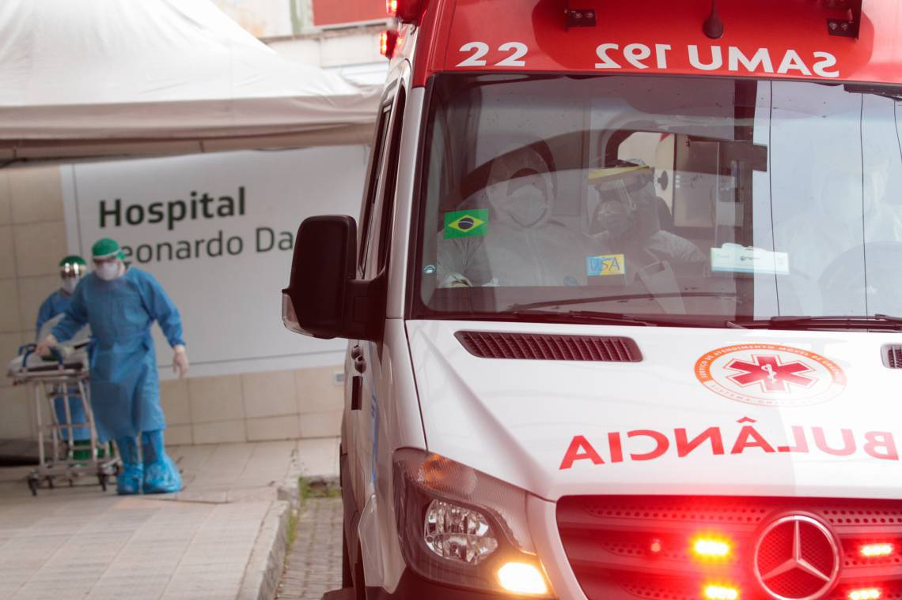

Ceará tem 20 mortes por coronavírus registradas nas últimas 24 horas e letalidade chega a 6%
|  | Com mais 202 casos, o Ceará chega a 6.985 confirmações da Covid-19 nesta terça-feira, 28 de abril (28/04). Já são 417 mortes pela doença, 20 a mais que o registrado no fim da tarde de segunda-feira. Os dados são da plataforma IntegraSUS, da Secretaria da Saúde do Estado (Sesa), atualizada às 17h25min. |
Profissionais de saúde em ambulância antes de sair do Hospital Leonardo Da Vinci para buscar uma pessoa com suspeita de Covid-19 em Fortaleza (Foto: JÚLIO CAESAR)
Os 10 sintomas raros ou pouco conhecidos causados pelo novo coronavírus
 |
A covid-19 é nova e ainda se sabe pouco sobre ela. Mas pesquisas e institutos médicos apontam os principais sintomas mais e menos frequentes da doença |
Coronavírus: vírus causador da covid-19 pode gerar vários sintomas (dowell/Getty Images)
Governo federal lança campanha de prevenção contra coronavírus
| Felipe Melo, Zezé di Camargo e Minotauro ensinam como
evitar covid-19 em comercial do governo divulgado neste sábado
(14.mar.2020). Eles e outros rostos conhecidos alertam para a
importância de medidas como lavar as mãos e manter os ambientes
arejados. Saiba mais |
Minuto Saúde - Prevenção coronavírus
| No vídeo ao lado temos os cuidados e as prevenções contra
o covid 19, lembrando sempre de lavar as mãos e evitar contatos
aos olhos e bocas, como estão vendo no video todos os protocolos
a serem seguidos com todas as tecnicas seguras para evitar a
contaminação do covid 19,com todas as precauções a serem seguidas
evitaremos o contagio. Saiba mais |